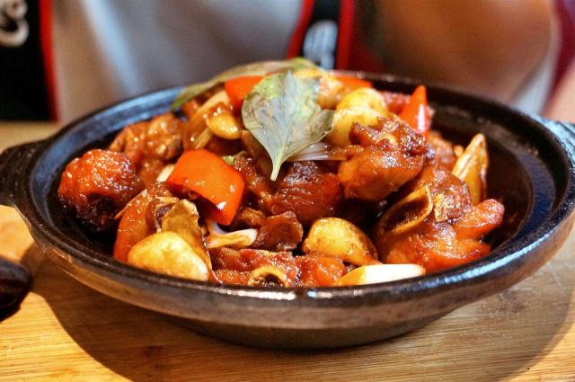
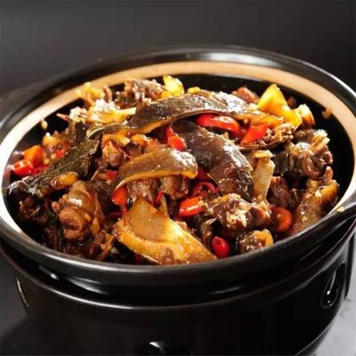

三
杯
味
选用万载三黄子鸡，剁块后直接盛入砂钵内用炭火炉焖制，使鸡肉中的蛋白质和脂肪充分溶解于汤汁之中，调味料中只需投放酱油、猪油、米酒各一杯，以达到除去腥味，突出鲜味，增加滋味的目的，从而使主料的香鲜味得到充分的体现。采用三杯调料进行调味和炭火炉焖制出来的"三杯鸡"色泽红亮，鸡肉香鲜骨酥，汁稠味浓、原汁原味，风味独特。


|
三 杯 味 |
三杯鸡 选用万载三黄子鸡，剁块后直接盛入砂钵内用炭火炉焖制，使鸡肉中的蛋白质和脂肪充分溶解于汤汁之中，调味料中只需投放酱油、猪油、米酒各一杯，以达到除去腥味，突出鲜味，增加滋味的目的，从而使主料的香鲜味得到充分的体现。采用三杯调料进行调味和炭火炉焖制出来的"三杯鸡"色泽红亮，鸡肉香鲜骨酥，汁稠味浓、原汁原味，风味独特。 |
 |
|---|---|---|
|
||
|  |
三杯甲鱼 三杯甲鱼是江西省汉族小吃，以脚鱼，猪油等原料制成，其味香浓醇，原汁原味。 做法 先将甲鱼斩去头，放入沸水锅内烫片刻捞出，用清水刮净白膜和粘液，用刀沿鱼背壳四周剖开，取出内脏洗净，剁成2.5厘米见方的块。然后将脚鱼盛入砂钵内，放入猪油、酱油、甜酒娘、葱结、姜块，加盖用旺火烧沸后，移置小火上，焖至酥烂，然后上旺火收稠卤汗取出葱结、姜块，放入味精，撒上椒粉，淋上麻油装盘即成 |
|---|